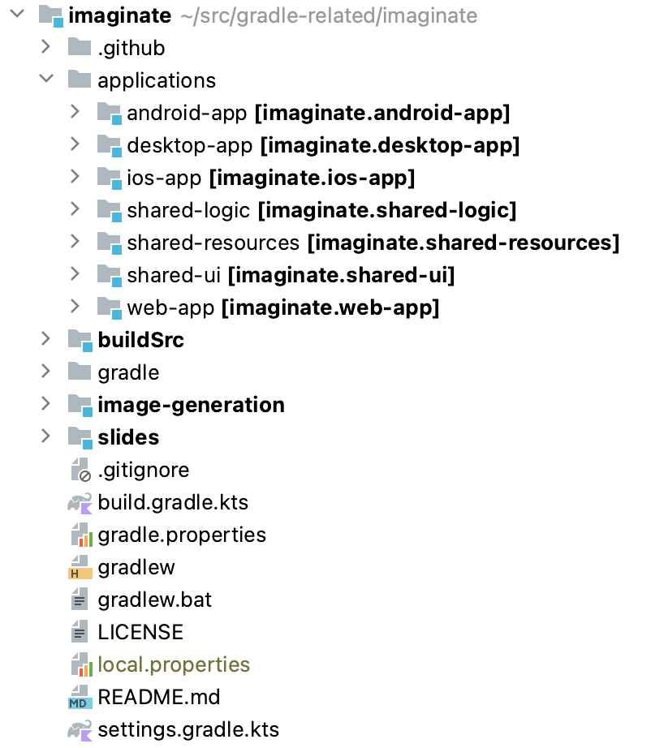
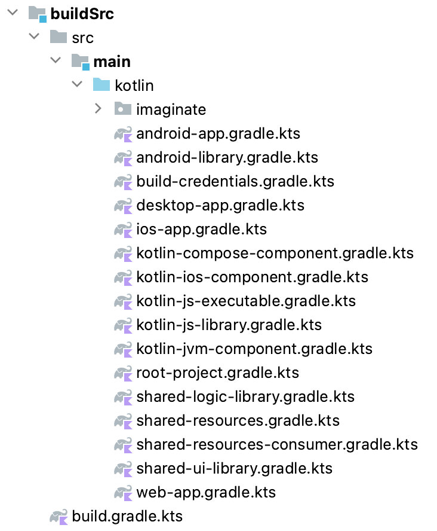

speaker {
name = "Paul Merlin"
company = "Gradle"
joined = 2015
position = "Kotlin DSL Project Lead, again \o/"
previously = "Configuration Cache Project Lead"
github = "eskatos"
mastodon = "@eskatos@mastodon.social"
}
Kotlin, one language to build them all!
Agenda
- Imaginate 🖼
An imaginary image generator
- Gradle & Kotlin ❤
Build logic
- Speed-up Loop Bonus 🚀
Configuration cache
Who are we?
🧑💻 🧑💻
|
Gradle
Since 2008, our mission is to
accelerate developer productivity.
Apache licenced sofware build tool
With 30M+ monthly downloads, this is one of the top 20 popular open source projects according to TechCrunch.
Gradle Enterprise, commercial product, is the first Developer Productivity Engineering (DPE) integrated solution.

Developer Productivity Engineering
DPE is an emerging software practice that relies on acceleration technologies and data analysis to improve developer productivity.
|

Build Scans
A permanent record
of what happens during a build.

|

{kind=link}
We recruit!
If what we’re going to talk about Today is of interest to you, come work with us!
Imaginate 🖼
An imaginary image generator
Imaginate - Demo
Imaginate - Exploration

Imaginate - Overview
Gradle & Kotlin ❤
Build logic
Build logic - Kotlin!
Gradle’s Kotlin DSL
|  |
Build logic - Structure
A composite build bringing 4 included builds together.

Build logic - Slides
"capital letter K. elephant. pop art." | "elephant in the Kotlin island. caravaggio." |
Build logic - Overview
settings.gradle.ktsbuildSrc/settings.gradle.kts |  |
Build logic - Exploration
Build logic - Kotlin DSL
Gradle plugins contribute to a dynamic model Kotlin DSL provides static accessors
IDE assistance, code navigation etc… | applications/web-app/build.gradle.kts |
Build logic - Building blocks
Convention plugins
Custom DSL
| Helpers
Custom Tasks
|
Build logic - buildSrc
Keep imperative logic out of project build scripts.
Expose declarative DSL from convention plugins instead.
 | applications/android-app/build.gradle.kts |
Build logic - buildSrc?
buildSrc vs includeBuild for build logic
Everything is made available in the owner build’s project scripts. You can directly use anything. |
Nothing is made available by default. You have to declare dependencies. Convention plugins
From
buildSrc |
Since Gradle 8.0, buildSrc is much more like included builds
docs.gradle.org/8.0/release-notes.html#improvements-for-buildsrc-builds
Build logic - buildSrc first
Start with buildSrc,
move to included builds when you need to
share logic between builds,
isolate a portion of build logic.
Transition is simple
if you only use convention plugins
Publish your convention plugins for sharing them across repositories
Build logic - Learn more
Gradle’s Kotlin DSL
Build organization
Jendrik’s Understanding Gradle videos
Speed-up Loop Bonus 🚀
Configuration cache
Configuration cache
Significantly improves build performance
by caching the result of the configuration phase
and reusing this for subsequent builds.

Configuration cache - How does it work?
First run
Subsequent runs
Configuration cache - What are the benefits?
Configuration time becomes work graph loading time
Increased parallelism
Reduced memory consumption
Configuration cache - Turn it on!
Stable in Gradle 8.1
docs.gradle.org/8.1/release-notes.html
On the command line
./gradlew --configuration-cache build
Persistently in gradle.properties
org.gradle.configuration-cache=true
What’s next?
Usability
| Performance
|
We recruit!
If what we talked about Today is of interest to you, come work with us!
Thank you!
Don’t forget to vote!